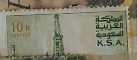
| SOURCE | TITLE| IMAGE MATCH | click to source page |
| YouTube | طوابع بريد قديمة ونادرة من المملكة العربية السعوديه - YouTube | 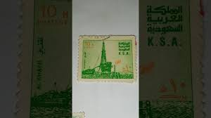 |
| eBay | SAUDI ARABIA 886b - Al Khafji Oil Rig "1983 Perf 12.0 x 12.0" (pb36504) | eBay | 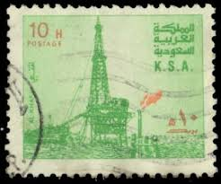 |
| Etsy | Arab Oil Platform - Postage Stamp Print - Aesthetic Wall Art - Postage Stamp Wall Poster - Vintage Poster Print - Etsy Canada | 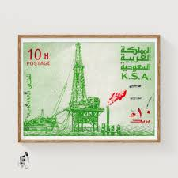 |
| Dreamstime.com | Al Khafji Oil Rig - Producing Plant Editorial Image - Image of correspondence, building: 367057710 |  |
| Find Your Stamps Value | Value of oil rig 1986 stamps | 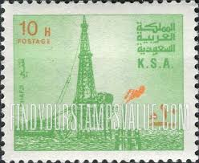 |
| eBay | Green Saudi Arabian Stamps for sale | eBay |  |
| iStock | Saudi Arabia Offshore Oil Rig Postage Stamp Stock Photo - Download Image Now - Crude Oil, Saudi Arabia, Arabic Script - iStock | 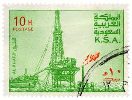 |
| Shutterstock | Fire Safety Word Cloud Concept Collage Stock Vector (Royalty Free) 1460173355 | Shutterstock |  |
| YouTube | طابع بريدي نادر المملكة العربية السعودية 🇸🇦 - YouTube | 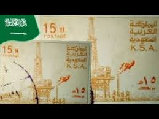 |
| مكتب خدمات سعودي | معقب جوازات تجديد اقامة | فريقنا معك دائمًا - مكتب خدمات عامة سعودي | 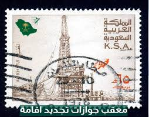 |
| lastdodo.com | Al-Khafji 10 (1983) - Saudi Arabia - LastDodo | 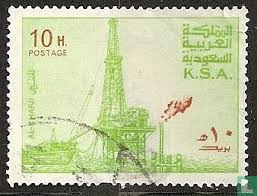 |
| HipStamp | Browse Products in Middle East > Saudi Arabia / HipStamp |  |
| مكتب خدمات سعودي | مكتب تعقيب جوازات | تفويضات سهلة وسريعة - مكتب خدمات عامة سعودي | 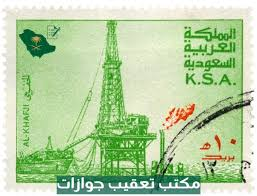 |
| Association Philatélique Senlisienne - | K.S.A." - Association Philatélique Senlisienne | 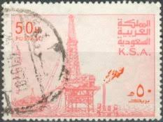 |
| British Postal Agencies of the Gulf Mail with Mixed Franking – KUWAIT 1958 cover with mixed franking sent to Bahrain. Philatelic, yes absolutely, but still a nice cover #kuwaitstamps #kuwaitpostalhistory#kuwaitpostoffice #kuwait #q8pns # | 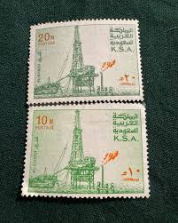 | |
| Find Your Stamps Value | Value of oester post 50 heller stamps | 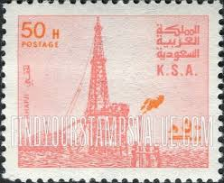 |
| Etsy | Plataforma petrolera árabe - Impresión de sello postal - Arte mural estético - Póster de sello postal - Impresión de póster vintage - Etsy España | 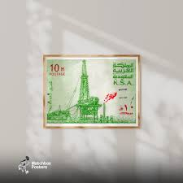 |
| eBay | Error, Variety Saudi Arabia Stamps for sale | eBay |  |
| CLASSIC ERROR IN PALESTINE ** **PALESTINE 📍INVERTED ERROR📍 ** KD SOLD | 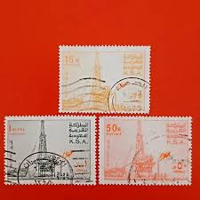 | |
| Find Your Stamps Value | Value of 15 heller stamps |  |
| Avion Thematics | Saudi Arabia 1976-81 Oil Rig At Al-Khafji 30h With Upright Wmk, Unmounted Mint SG 1172*, stamps on , stamps on oil , stamps on | 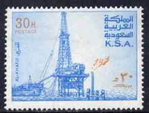 |
| HipStamp | Saudi Arabia 1976-81 Oil Rig at Al-Khafji 50h (pale-rose ... | Middle East - Saudi Arabia, Stamp / HipStamp | 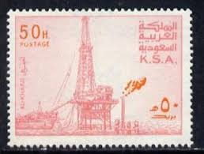 |
| Find Your Stamps Value | Al Khafji oil rig - جهاز تنقيب النفط الخفجي 40h Magenta & orange stamp price, value | 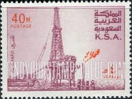 |
| eBay | Saudi KSA #Mi603I MNH 1976 Al Khafji Oil Rig [734] | eBay | 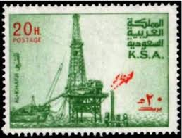 |
| Shutterstock | 2+ Thousand Postal Arabia Saudita Royalty-Free Images, Stock Photos & Pictures | Shutterstock |  |
| Dreamstime.com | Vintage Postage Stamps from Saudi Arabia. Editorial Stock Image - Image of poster, text: 288279609 | 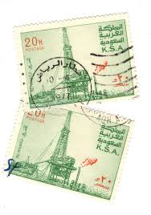 |
| HipStamp | Browse Products in Middle East > Saudi Arabia / HipStamp | 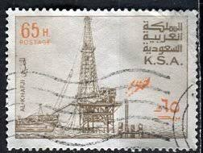 |
| eBay Australia | SAUDI ARABIA 1976 Mi 609 ERROR: INVERTED WMK! | eBay Australia | 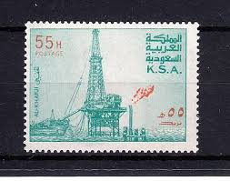 |
| Etsy | Arabische Öl-Platform - Briefmarke Druck - Ästhetische Wandkunst - Briefmarke Wand Poster - Vintage Poster Druck - Etsy.de | 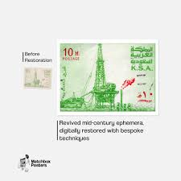 |
| Find Your Stamps Value | Al Khafji oil rig - جهاز تنقيب النفط الخفجي 35h Sepia & orange stamp price, value | 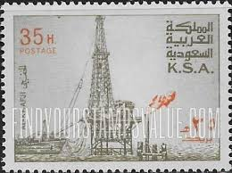 |
| eBay | SAUDI ARABIA 888 - Al Khafji Oil Rig "1982 Perf 14.0 x 13.5" (pb36498) | eBay | 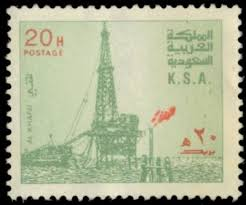 |
| iStock | Saudi Arabian Postage Stamp Stock Photo - Download Image Now - Cut Out, Equipment, Fuel and Power Generation - iStock | 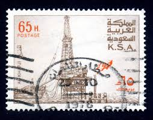 |
| eBay | Saudi KSA #Mi609lb MNH 1977 Al Khafji Oil Rig [740a] | eBay | 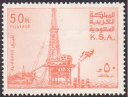 |
| Dreamstime.com | Saudi Postage Stamp Stock Photos - Free & Royalty-Free Stock Photos from Dreamstime | 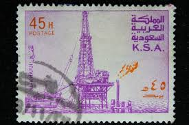 |
| eBay | No Gum Postage Middle Eastern Stamps for sale | eBay | 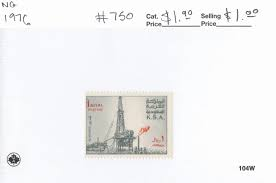 |
| Colnect | Stamp: Al Khafji Oil Rig - Producing Plant (Saudi Arabia(Al Khafji Oil Rig) Mi:SA 609Ia,Sn:SA 740,Yt:SA 450,Sg:SA 1176a 📮 |  |
| Daraz | Buy mints for school Online at Best Price in Pakistan - Daraz.pk | 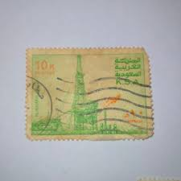 |
| eBay UK | Saudia Arabia - 55h Oil Rig, Al-Khafji (Used) 1976 (CV $11) | eBay UK | 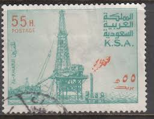 |
| Avion Thematics | Avion Thematics Stamps | Search for stamps on saudi+arabia+++oil | 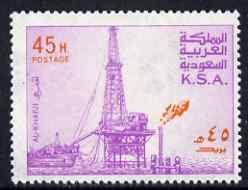 |
| Alamy | Eva peron portrait hi-res stock photography and images - Alamy | 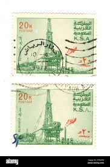 |
| Shutterstock | 36 Khafji Royalty-Free Images, Stock Photos & Pictures | Shutterstock | 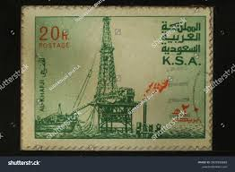 |
| eBay | 👍SAUDI ARABIA 1976 OIL DERRICK SC#734 gutter PAIR MNH 💲FREE SHIPPING💲 | eBay |  |
| eBay | Saudi Arabia 1976/82 ** Mi.602, SG1169, Oil rig Ölförderung [sfm774] | eBay | 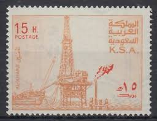 |
| eBay | SAUDI ARABIA 1977 50H COLOR ERROR IN ORANGE PLUS | eBay | 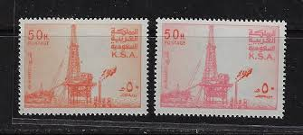 |
| eBay | SAUDI ARABIA/1986/MNH/SC#1003-1004/DISCOVERY OF OIL 50TH. ANNIV. | eBay | 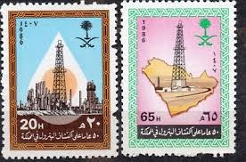 |
| eBay | Saudi KSA #Mi602 MNH 1977 Al Khafji Oil Rig [733] | eBay |  |
| Dreamstime.com | Vintage Postage Stamps from Saudi Arabia. Editorial Photography - Image of philatelic, white: 313378297 | 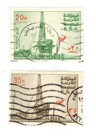 |
| Adobe | 100 saudi riyal coin against 1 saudi riyal bank note Stock Photo | Adobe Stock | 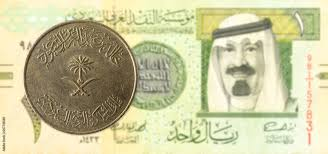 |
| BANK NOTE MUSEUM | P-8 | 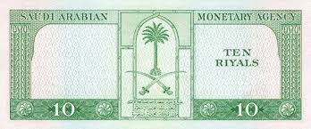 |
| وكالة الأنباء السعودية | Saudi Post Issues Commemorative Stamp and Postcard for Hajj Season 1446 AH | 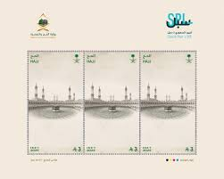 |
| Etsy | Saudi Arabia Coin - Etsy | 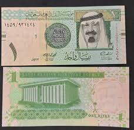 |
| Numista | 100 Riyals - Saudi Arabia (1932-date) – Numista | 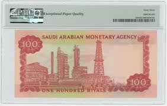 |
| BLOMINVEST Bank | kingdom Archives - BLOMINVEST | 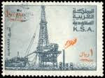 |
| HipStamp | Saudi Arabia - #750 Oil Rig - Used | Middle East - Saudi Arabia, General Issue Stamp / HipStamp | 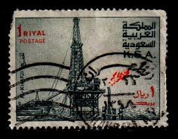 |
| eBay | EPQ/PPQ Saudi Arabian Paper Money for sale | eBay | 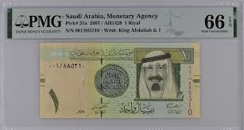 |
| Dreamstime.com | Isolated Saudi Arabian Stamp Stock Photos - Free & Royalty-Free Stock Photos from Dreamstime | 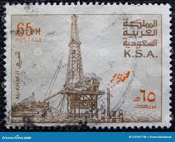 |
| eBay | SAUDI ARABIA 1982 - AL KHAFJI OIL RIG - P 12 - Sc. 891b Mi. 743 D MNH [4S38] | eBay | 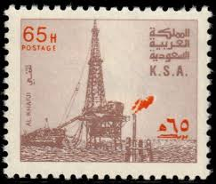 |
| allnumis.com | 100 Riyals L. AH1379 (1984), 1983; 1984 ND Issue (Law of 1.7. AH1379) - Saudi Arabia - Banknote - 9892 | 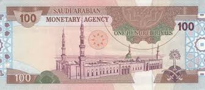 |
| Mystic Stamp | 1042-45 - 1987 Saudi Arabia - Mystic Stamp Company | 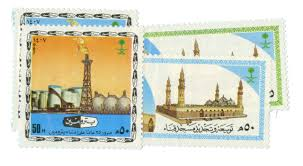 |